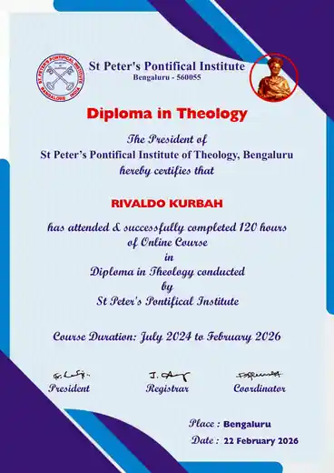
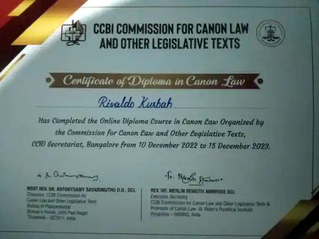
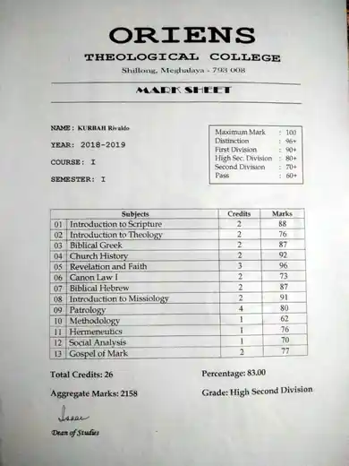
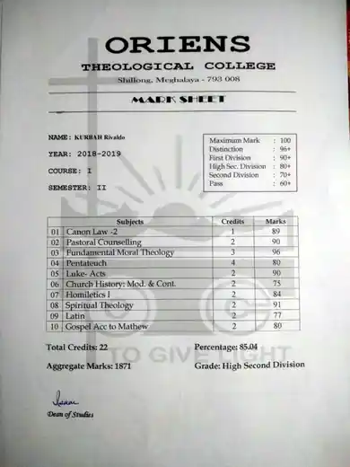
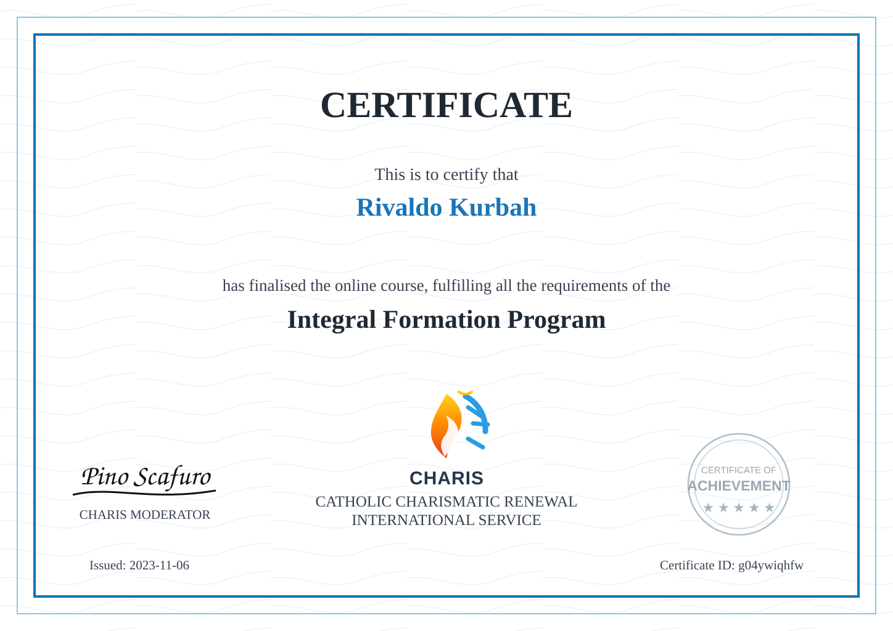
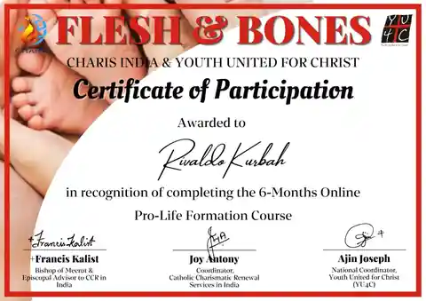

Catholic Posters & Event Designs
Visual communication for Catholic events, devotions, conventions and ministry programmes.
A dedicated space for Catholic creative work, Church and youth-ministry communications, evangelisation projects, faith-based digital work, and formation that supports a life of service to Christ and His Church.
Areas in which design, communication and digital skills are placed at the service of faith and evangelisation.
Visual communication for Catholic events, devotions, conventions and ministry programmes.
Communications and creative materials supporting parish, youth and community ministry.
Faith-centred creative work supporting Scripture, prayer, formation and fellowship.
Projects centred on proclaiming Christ's mercy and encouraging a deeper life of faith.
Digital projects that combine technology, communication and Catholic mission.
My Catholic faith is central to the way I understand creativity and service. I seek to use design, communication and digital technology in support of evangelisation, catechesis, youth ministry, prayer initiatives and projects that help people encounter Christ and the life of the Church. For me, creative work is not only a skill; it is also a way of serving the mission of the Gospel with care, clarity and reverence.
Selected formation and academic credentials, arranged in the requested order.





Formation in Catholic Charismatic Renewal and mission.
View certificate
Pro-life formation and Catholic advocacy education.
View certificateTechnical and cybersecurity certifications remain on the separate Certifications page.